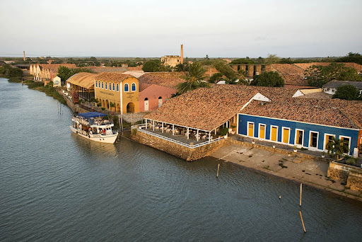

Localizada no norte do Piauí, Parnaíba é a segunda maior cidade do estado e um dos destinos mais fascinantes do Nordeste brasileiro. Conhecida como "Capital do Delta", ela é a porta de entrada para o Delta do Parnaíba, um dos únicos deltas em mar aberto das Américas, com uma riqueza natural impressionante: manguezais, dunas, ilhas e uma biodiversidade única.
Localizado no coração de Parnaíba, no Piauí, o Porto das Barcas é um dos principais pontos turísticos da cidade e um símbolo da rica história e cultura da região. Construído no século XIX, esse complexo arquitetônico foi um importante centro comercial e portuário durante o ciclo econômico do charque e das salinas.
No centro da cidade, esta igreja histórica de 1887 encanta com sua arquitetura imponente e vitrais coloridos. Um lugar sereno para uma pausa entre um passeio e outro.
Praia de ventos fortes e dunas impressionantes, é o point dos esportes aquáticos. Restaurantes flutuantes servem delícias regionais, e a vista do alto das dunas é imperdível.
Labirinto natural de rios, ilhas e manguezais. Passeios de barco revelam guarás vermelhos, comunidades tradicionais e o encontro emocionante do rio com o mar.
Um cantinho tranquilo onde o rio encontra o mar, perfeito para um banho relaxante ou um almoço com peixes frescos. Dali saem os barcos para explorar o Delta, e o pôr do sol sobre as dunas é de tirar o fôlego.